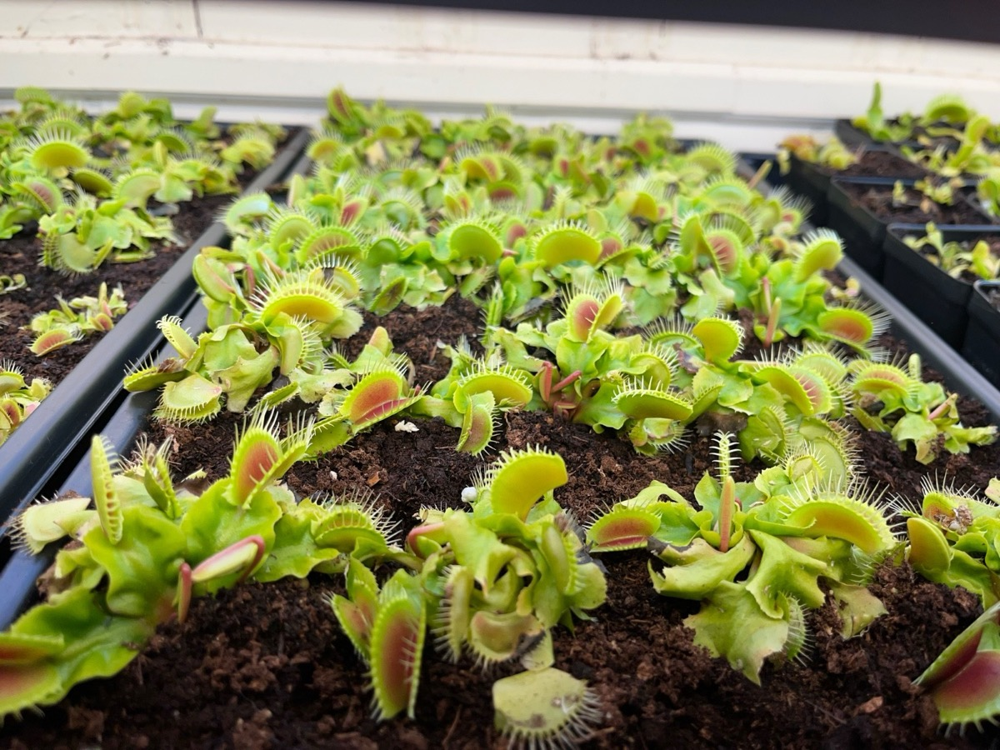
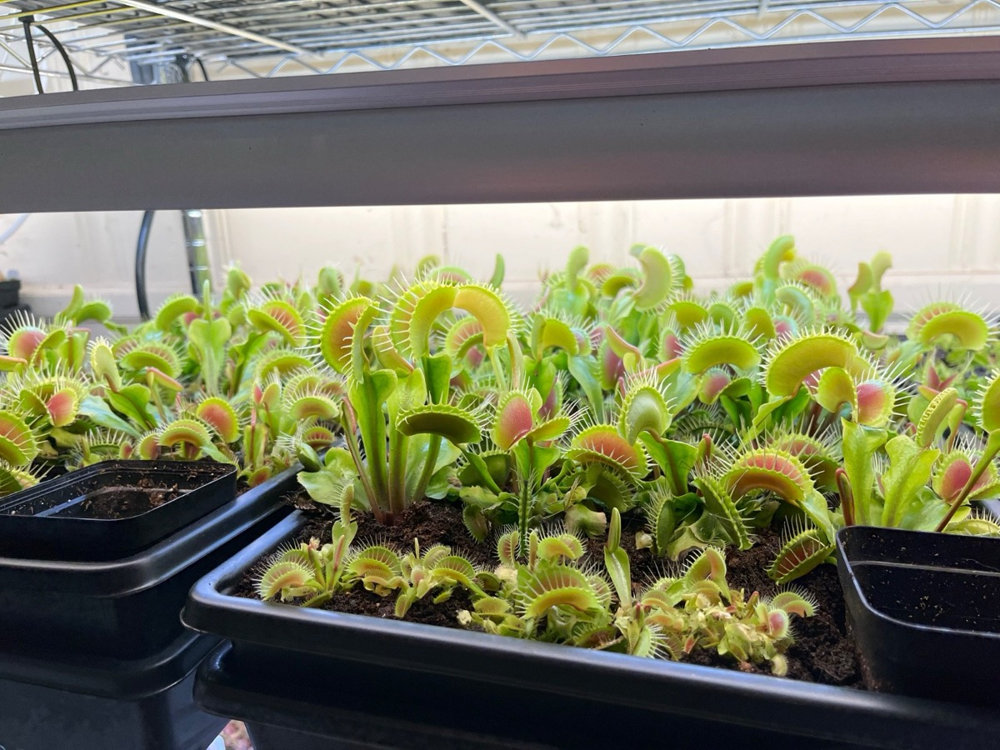
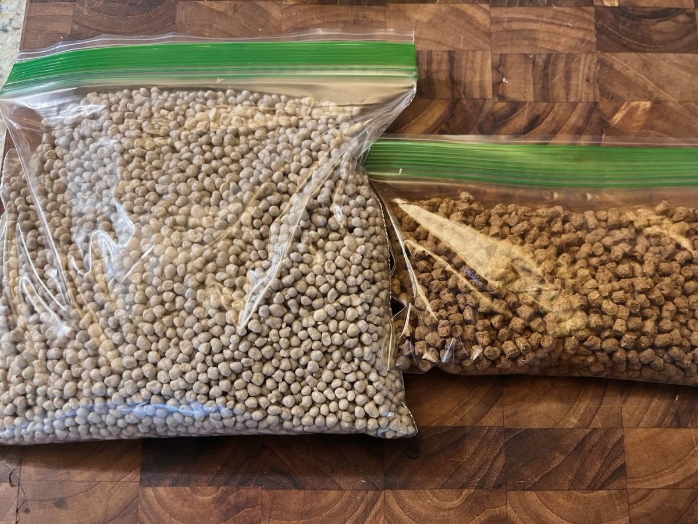

This is the method I use to get Venus flytraps from seed to flowering size in about eight months. It is dead simple: one slow-release fertilizer prill and one rehydrated fish-food pellet, fed into an open trap. The plant does the rest.
Why Nutricote?
Feeding insects to your flytraps works, but the nutrient payload of a single bug is modest, especially for phosphorus and potassium, which are quite low in meat relative to nitrogen. Nutricote changes the equation. A single prill delivers 5 to 10 times the nutrient density of a typical insect, and because it is coated in a resin shell, those nutrients release slowly over time rather than all at once. Feed a prill into a trap and you are giving the plant a sustained, high-density nutrient drip straight through the leaf tissue.
I have been getting biomass doubling times on the order of two and a half weeks with this method, and I have taken plants from seed to flowering size in about eight months. It basically removes nutrient limitation as a bottleneck and lets the plants luxury feed.


One pound of Nutricote is a lot of fertilizer. A single prill contains roughly the same amount of nutrient as 200 foliar feedings with 100 ppm Maxsea, and a pound is thousands of prills. It will last most hobbyists a very long time.
What you need
- Nutricote 360 (18-6-8 with micronutrients). The 360-day formula specifically; see the warning below.
- Fluval Bug Bites pellets, a mix of insect and fish protein. Venus flytraps will reject a dry fertilizer pellet as inorganic debris, so the Bug Bites are essential.
- Boiling water, and a trap that is open.
I sell both together as a fertilizer kit (1 lb of Nutricote and 2 oz of Bug Bites) if you would rather not buy a bale of each.
How to do it
- Rehydrate the Bug Bites. Count out as many pellets as you plan to feed traps. Pour boiling water over them for about 15 seconds, then decant.
- Check the texture. You are aiming for play dough: firm and moldable, not spongy or wet. If the pellets feel sponge-like, they are too wet, and excess moisture in the trap can lead to rot.
- Load the trap. Place one Nutricote prill and one rehydrated pellet into an open trap.
- Close it. Massage the trap gently for about 20 seconds to stimulate the trigger hairs and induce closure. The trap will seal and begin absorbing nutrients over the following days and weeks.
The occasional prill, maybe 1 in 10, will release too aggressively and burn the leaf. That is normal; just remove the dead trap. The rest will deliver a sustained flow of NPK and micronutrients directly into the plant, fueling growth at a rate that insect feeding alone cannot touch.

If you would rather watch than read, here is a short video of me doing it.
Not Osmocote
Nutricote 360 is not the same thing as Osmocote. Osmocote releases far too quickly and will burn the traps. The 360-day Nutricote formula is gentle enough that the vast majority of traps handle it without issue.